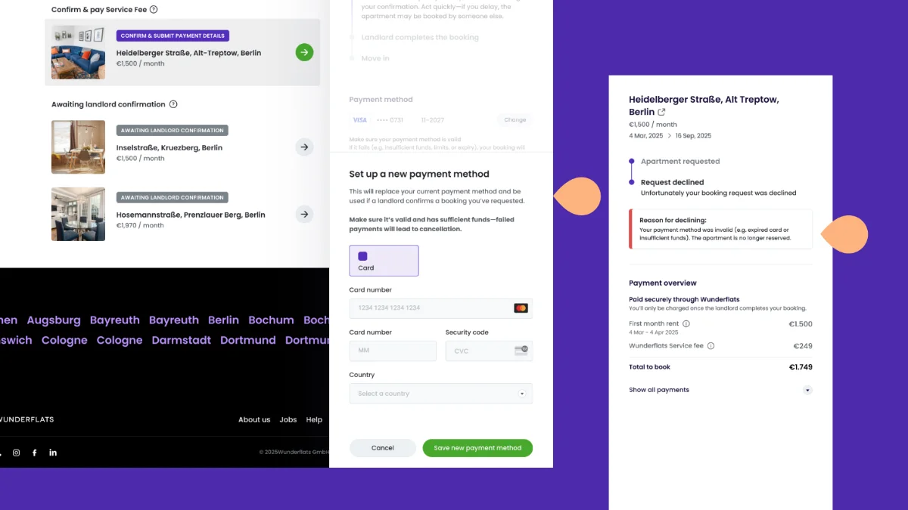
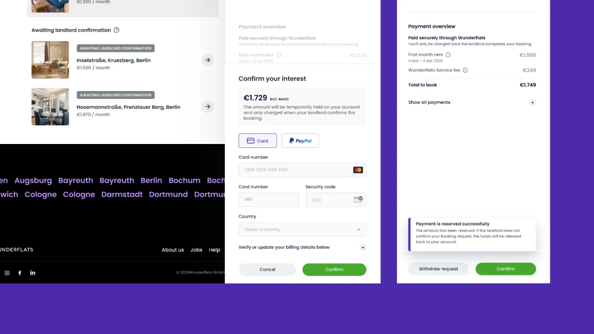

A payment experience that reduces failures and early-stage drop-off.
My Role
Ideation, user research, strategy, design, implementation support
Team
MePMTLDev
Timeline
Q4 2025
The problem
To confirm apartment booking, a user must submit a payment method. The payment method is only charged after the landlord confirms the booking, so the user is not present at this stage.
This flow leads to a high rate of failed payments because users are not there to resolve possible payment issues. High-value transactions also tend to have a higher payment failure rate.
THE COST OF THAT
Failed payments create poor customer experience
If a payment fails, the booking is cancelled, creating a frustrating experience for both the landlord and tenant.
Payment failures increase operational workload
Failed payments also require additional time and effort from the Customer Operations Booking Manager.

How I approached it
01
Mapped the payment funnel
Traced every step from checkout to confirmation to find where and why payments fail.
02
Looked at the failure data
Segmented failures by method and error code; a handful of causes drove most of the drop-off.
03
User interviews + payments support tickets
Talking to users and reading support tickets showed the real problem was not the failure itself but the dead end after it: people did not know whether they were charged, what went wrong, or how to try again.
Top pain points
Fragile checkout
The checkout was breaking on edge cases and was offering no graceful way to recover a failed attempt.
Unhelpful errors
Failed payments were returning generic messages, and only 18% of users who hit an error attempted a retry.
“Was I charged?”
Unclear payment states was leaving users unsure whether money had left their account, driving anxious support contacts.
Limited method coverage
The checkout was relying on a narrow set of methods, excluding the local options many users preferred.
Solving it
Ideate, then prioritise
Before the team workshop, I drafted ideas mapped to each pain point, for example:
A clear failure state with a plain-language reason and an obvious retry.
A smart retry that keeps the entered details and suggests a working method.
Broader payment methods, including local options, surfaced by relevance.
I ran a workshop with the wider team to understand the technical complexity and decide what to ship first and what to do later.
The strategy
Ship a better failure-and-retry experience fast, while rebuilding the checkout in parallel.
QUICK WIN
Redesigned error and retry states.
LONG-TERM
Instead of saving the payment method, the new solution reserves the first month’s rent, giving the user time to resolve any payment issues. The amount is only charged once the landlord confirms the booking.
Prototype and test
The first prototype exposed how many payment states we had never designed for. Testing made one thing clear: people need to know exactly what happened and what to do next, in plain language.
What went live
1
Recoverable checkout
Failed payments now show a clear reason and a one-tap retry that keeps your details.
2
Clear payment status
Pending, failed, and confirmed states are unambiguous throughout the flow.
3
Expanded methods
Added local and preferred payment methods, surfaced by relevance.

Impact
−34%
Payment failure rate
Fewer first-attempt failures after the checkout rebuild.
↑
Activation rate
A clear retry path recovered payments that used to be lost.
↑
Trial-to-customer
Reduced early-stage drop-off around the first payment.
Fewer support requests asking “was I charged?”.
Better UX across checkout: a consistent, accessible, usability-tested payment experience end to end.